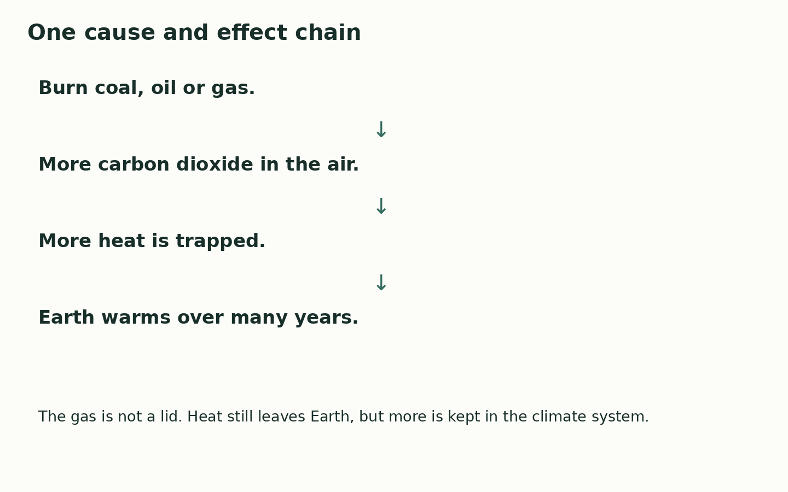

Friday 12 March 2027 | P2 | 40 minutes | Year A
Humanities · GROW · Spring 2 Week 3 · HUM-GROW-S2-W03
Learning outcome: Investigate causes and effects of climate change.
Climate is the usual weather over many years. Human actions add gases that trap more heat. Burning coal, oil and gas adds carbon dioxide to the air. This strengthens the greenhouse effect and warms Earth. This does not mean each year or each place gets warmer in a straight line. We can use climate evidence to check changes over time.

A cause helps bring about a change. An effect is a result.
More greenhouse gases trap more heat. This warms Earth.
Sea level can rise as ice on land melts and sea water warms and expands.
One cold year can occur while the climate warms over many years.
Where this leads: People who study weather and plan places use climate records to check risks and choices.